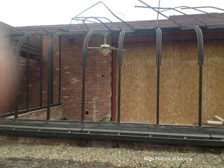
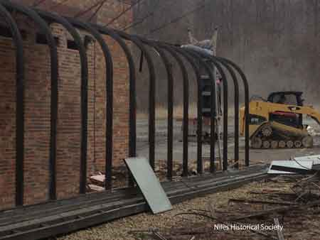
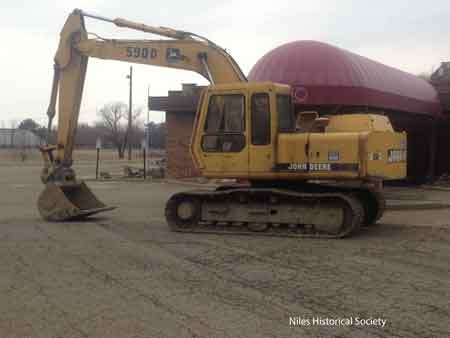

Ward-Thomas Museum


Alberini’s Restaurant
Ward — Thomas
Museum
Home of the Niles Historical Society
503 Brown Street Niles, Ohio 44446
Click here to become a Niles Historical Society Member or to renew your membership
Click on any photograph to view a larger image, click on image again to zoom into photograph.
|
Back in October 1957, Richard Alberini had his start in a small wooden restaurant across from Eastwood Golf Course. When he opened his restaurant, he was a student at Youngstown University and worked full-time at Copperweld Steel. His many old friends recall this young, personable dynamo who packed his small establishment on the hottest days of the summer and without air-conditioning. He often asked, “In this heat why don’t you eat in an air-conditioned restaurant?” The answer was obvious. His customers wanted his good food, good service and they liked Richard Alberini. |
Niles Daily Times July 7, 1983 Alberini had no formal training in food preparation. “I was 21 before I knew what a filet was,” he claims. “Whenever you said steak to me, I thought of round steak, which my mother pounded and tenderized with a knife.” He was first exposed to restaurant life when in the Navy, stationed in San Francisco. He worked downtown on the dry docks where he met many restauranters. He also had a boss who took him out to different night spots in town. “I found out what a shrimp cocktail was,” he said, “and a martini. I didn’t know a martini from a seven and seven.” He was bitten by the restaurant bug. “It fascinated me,” Alberini remembers.
“It’s like you’re on stage all the time, if
you have a good place.” The experience gave Alberini an
idea. He wanted a place where he could walk into the restaurant
and talk to everybody and not be ashamed. It was a lofty dream
for a 21-year-old. Six years later, September 14, 1957, he got
his opportunity on The Strip. |
|
| |
||
|
New Alberini’s restaurant opened in 1961. The original building has undergone renovations and additions four times. Photo is as the building appeared in 2013. |
With that beginning and four years’ experience, he built his present building in 1961. “I learned from the ground up,” he says. “I scrubbed floors. I washed dishes. I wasn’t no brain. I was just a little guy from Niles, Ohio. But I learned by going into other places. I go into successful places, and I watch what they do.” It’s like going to school. In the new building, Alberini steered away from the strictly sandwich and pizza menu of his original house. He added white tablecloths and full dinners. He built a family business. His mother-in-law and cousins work in the kitchen. His wife and sons work with Alberini on the floor. “My whole family’s a part of this business,” Alberini says, proudly. “We’re giving everything to this restaurant. This is like home to me. I think, you know, to walk out of here and leave a stranger managing and us not paying any attention to it, this business would never flourish. When you walk out there and see everyone you know, it really is fun.” Alberini describes his food both on the menu
and in person as “Vera Cucina Italiano.” That translates
to true Italian cooking. “The Italian influence prevails
in all our dishes,” Alberini explains. “That’s
our way. If we grill center cut pork chops, it’s going
to be done the way our mothers would’ve done at home.” |
|
| |
||
|
There are four dining areas on the main floor. a bar area, and a banquet room in the lower level. An extensive wine selection is available. Richard Alberini chose the interior decorations and themes for each dining area. |
He strives for a relaxed atmosphere for his diners. Eating out should be more than ordering food to Alberini. It’s like the guy at one of our seminars says, “We’re not dogs. When we go out to eat, we should go out to dine. Everything out should be an experience. If you go to a restaurant and pay to eat, you should be able to use each of the different facilities that they offer. You’re paying for that. Dining’s taking advantage of everything-the table, the atmosphere, and the service.” Running a successful operation is a combination of many different ingredients. In the end, the add up to consistency, the basics of good food, good service, and a nice atmosphere each time you visit that restaurant. Alberini impresses this on his help. He is particularly proud of his wine list, which features 300 different wines. To insure they’re handled properly, his waitresses attend Sunday seminars on their day off, where wine distributors lecture, and Alberini’s cooks put out a buffet with wine for an informal testing. When you say, “Gee honey, what one of those white wines ought to go with this?” They know and if they’re not sure, they’ll come ask me. They will know how to properly display it, how to open it, how to chill it, and how to pour. They have the whole wine show in their minds from the seminars.” |
|
| |
||
| This type of attention to detail extends to customer relations. “I tell my help I want them to be just like me,” Alberini says, “when you walk in the front door, I tell the hostesses, the cashier, the busboys, say hello to everybody. If they leave, say goodnight. Be just like us and it works.” When you walk into our door, you become a customer, someone that’s going to put money in our register and help us do what we set out to do and that’s give good food and service and do it with class.” The kitchen is another matter entirely. To serve up 500 dinners a night takes quality control and preparedness of the whole staff. “It’s the matter of doing things the right way,” Alberini explains. “None of this junk food thrown together fast. You have to make it just like you were going to make it for a specific customer right now. You have to have a system where everything gets used all the time. Nothing gets stale. The idea is to start with fresh things in the first place.” “We give personal attention,” he continues, “and are very concerned about every meal that comes out of the kitchen and every drink that comes out of the bar and every bottle of wine. It’s absolutely true that we do these things. It’s not just something to write about,” He points out in a smaller city; good food is not enough to be successful, especially when you are located on the Strip with a dozen good restaurants close by. Repeat customers are the key to a flourishing business and to do that, Alberini has had to continually change to keep up with the public. 1979 advertisement as a featured restaurant in the Niles Daily Times. |
||
| |
||
| He has remodeled and added on to his building four times. “We put everything back into it,” he says. “But just look at the place and you’ll understand why. I don’t want anything to be like anything else on the Strip.” The same attitude applies to the menu. If an item doesn’t shove, they take it off and try something new. “In the restaurant business today,” Alberini says, “people are starting to think of health. Seafood is a healthy food, so I’m expanding the seafood. There’s nothing like broiled seafood. Veal is another item that’s coming on. And pasta, the athletes love pasta.” The business has had more than just financial rewards. “The families make me smile,” Alberini says. “They’re such beautiful people. You know, when you run a good restaurant, you are a respected person in the community. Everybody pays special attention to you. It just goes to show, people think about their stomachs first. If you’re a guy who can make them happy, you’re some kind of guy.” Alberini’s featured a long hallway with various coaches’ pictures. Tony M.ason became Nile’s head football coach in 1959. The football fans followed Mason to Alberini’s for the after game celebrations, making Alberini’s The Place to celebrate. Richard even made a special sandwich and named it after Mason. Photo of Tony Mason, that hung in the Coach’s Hallwa,y signed by Coach Mason thanking Richard Alberini for everything, especially his frindship. PO1.1342 |
||
| |
||
Monday, January 8th 2007, 7:28 AM EST Tributes have been pouring out for Richard “Chook” Alberini Jr., who ran Alberini’s Restaurant in Niles, which operated for 56 years before closing in March 2013. Photo of Richard “Chook” Alberini Jr. |
||
| |
||
Alberini’s Ashtray |
Alberini’s Matchbook |
Alberini’s Business Card |
Alberini Ashtray With permission: |
||
| Customer Memories and Comments | ||
Nancy LaBruno Jayne My husband and I went there while we were dating
and long after we were married and had children. The food was
excellent. It was a wonderful place to go to anytime |
Chuck Boyles Then I used to take my girlfriend there for dinner , I always got the perch dinner with rice pilaf, soooo good ! When I went to pay my bill Mr.Alberini would
charge me and my girlfriend for a slice of pizza ! He would
always sit with us talking football . He called my girlfriend
his tomato! Great memories there! |
Mindy
Pace My mom worked there at the very first lil restaurant when he first started. She worked until the day before I was born and went back after I was born and worked for Richard for 32 years. He told her when she was pregnant that the child would have a job when it was old enough. I started working there when I was 13 on Saturday for $20 a day doing running for the older ladies that did prep work. Then hired in when I turned 15 as a salad maker. At 1 point my family had more people working there then anyone’s family. dad and mom, brother, 2 sisters, nephew, aunt and uncle 1 bro-in-law and my self.. |
Trish Scarmuzzi My date and I went there after prom my junior year. Once, we went there for dinner, and Mr. Alberini showed my brother-in-law around the wine cellar. Mrs. Alberini always greeted my Mom with a
kiss and hug. And there are too many other family events that
we had there to mention. Always a great place! |
Jim Pappada We had the top college coaches in the nation as speakers and many of their pictures were hung on the walls of their restaurant. Richard was close friends with many of these
guys. Great times for the coaches in Trumbull County and always
the best food! |
Charlie
Danger Johnson My grandfather worked in a factory with Mr. Alberini before they started their restaurant business I believe they had a spaghetti cart for dinners to go. Every time I got straight A’s or we celebrated my grandfather’s birthday it was at Alberini’s. First round was always a shrimp cocktail, and Rich or Chookie would always come see us and celebrate the occasion. I cherish those memories, and when I go home I still travel to Boardman to order the Veal Parm from Michaels. Four generations of my family have had the pleasure of sitting at their tables - and we’re forever grateful! |
JoAnne
S.t Pierre Hulvalchick Mrs. Alberini was always there and she always looked beautiful! She would talk to everyone, such a sweet lady. |
Brian
McLean Our family ate their a lot , football games and our Niles Jaycees meetings were there too . Love their food and Mr Alberini always made his rounds to say hello. |
MaryKay
Wolfe Arnold My Mom (Minnie Wolfe) was one of the first waitresses. Went there after Washington Jr High Dances and then during High School after working evenings with Mrs. Cera in the Athletic office during football season. Loved the pizza burgers! |
Shelby
Lacue I remember going to Alberinis on 422 left side of 422 before the new place was built. Pizza burgers were so good this was in 60’s |
Debby
Scarnecchia My late husband and I went there on our first date and continued to go for 37 years until his passing. Great food, atmosphere and always wonderful people. |
Celeste
Salerno Falter Went to Alberini’s after every Niles football game , 1967-1970, my Dad, Frank Salerno was the Maître d’ there, we were very close with the Alberini family and still are today. |
Anita
Danyluk Means Went there when it was a trailer next to the Hi-Way Arena skating rink. Loved the pizza burger |
James
Keith Piper My Dad’s picture was displayed with other football coaches that once were Dragons. |
Sarah
Infante Rich Alberini was a very kind man, made everyone feel special and welcome, and he was probably the biggest supporter of Niles athletics. |
|  Demolition of Alberini’s after closure in 2013 |
 Demolition of Alberini’s after closure in 2013 |
 Demolition of Alberini’s after closure in 2013 |
|
|
||
{kind=link}
{kind=link}
{kind=link}
{kind=link}
{kind=link}
{kind=link}
{kind=link}
{kind=link}
{kind=link}
{kind=link}
{kind=link}
{kind=link}